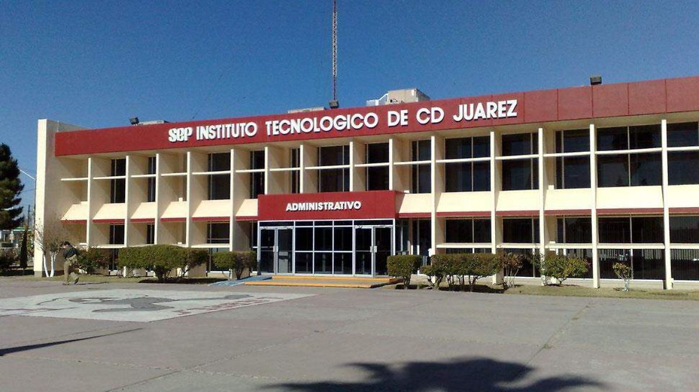

Instituto Tecnológico de Ciudad Juárez (ITCJ)
Historia del ITCJ
La Educación Tecnológica en el antiguo Paso del Norte se remonta a la fundación de la Escuela Técnica Industrial número 5 en 1935 a iniciativa del Profr. Alberto Álvarez y Álvarez.
Posteriormente, cambió su nombre por el de Escuela de Enseñanzas Especiales número 21 y ya, en su cuarta y última etapa, se transformó en la Escuela Técnica Industrial y Comercial.
Con el impulso de un grupo de visionarios liderados por el Profr. Ramón Rivera Lara y el Lic. Filiberto Terrazas Sánchez, en 1960 el C. Presidente de México Lic. Adolfo López Mateos prometió crear el Instituto Tecnológico tomando en consideración que la ciudad requería de técnicos cada vez más especializados para su incipiente industria. Además, la población urbana se había incrementado a 276,995 habitantes
Misión
Formar profesionistas en educación superior tecnológica de calidad, capaces de contribuir a la ciencia, tecnología e investigación con un enfoque creativo e innovador, mediante una educación integral basada en competencias para el desarrollo sustentable de una sociedad incluyente, globalizada, equitativa y humana.
Visión
Ser una institución de alto desempeño en educación superior tecnológica, que forme profesionales e investigadores que contribuyan al desarrollo sostenido, sustentable y equitativo de la sociedad.
Con esta visión el Tecnológico Nacional de México / Instituto Tecnológico de Ciudad Juárez busca contribuir a la transformación educativa en México, orientando sus esfuerzos hacia el desarrollo humano sustentable y la competitividad.
Infraestructura
Infraestructura Académica y Tecnológica
Planta de 512 maestros altamente calificados y vinculados con la práctica profesional.
Red local con más de 1,200 computadoras con internet.
Laboratorios de Manufactura Automatizada, Electrónica, Mecatrónica (Robótica, Neumática, Materiales y Energías Alternas), Metal Mecánica, Eléctrica, Simulación, Diseño Mecánica, Sistemas Computacionales (Salas de Cómputo y Laboratorios de Redes CISCO), Multimedia, Contabilidad, Laboratorios de Ciencias Básicas, Química y Física.
Oferta Académica
Licenciatura en Administración
Negocios Internacionales.
Ingeniería Administrativa.
Sistemas Administrativos.
Planificación Industrial.
Ciencias de la Educación.
Administración Pública.
Ciencias de la Administración.
